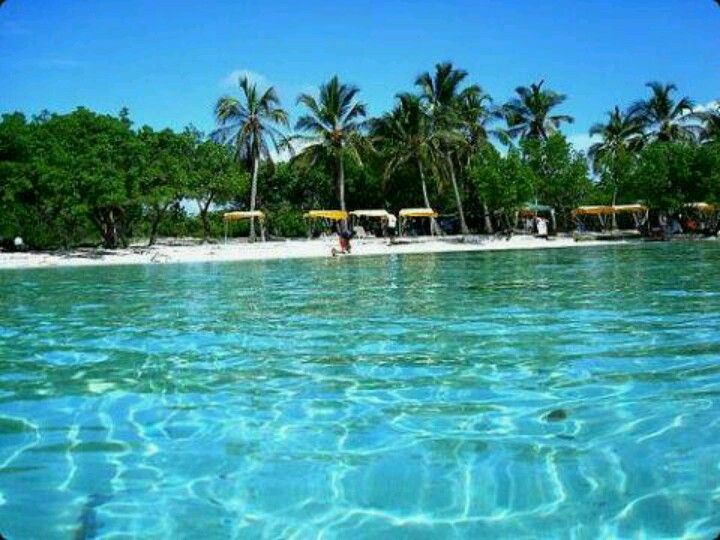
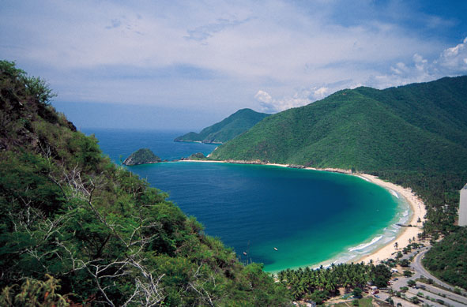

Conoce Venezuela
 |
Paquete 1 - Los Roques - VenezuelaSi quieres conocer uno de los mejores archipielagos, debes conocer los roques. Cuenta con playas de arenas blancas, aguas tranquilas y cristalinas, además allí encontrarás dos piscinas naturales en las que se puede hacer snorkel y ver la biodiversidad marina del lugar. Precio $12.000 USD - Incluye pasajes, estadia y comida |
|  |
Paquete 2 - AdicoraSi te quieres aventurar a conocer un lugar con una mistica inigualable y de los mas populares de Venezuela, no te puedes perder de Adicora, que combina la belleza de un poblado con gente cordial y calurosa y un paisaje inigualable, aguas pocas profundas y cristalinas para completar la receta perfecta y que recordaras toda tu vida Precio $9.000 USD - Incluye pasajes, estadia y comida |
|  |
Paquete 3 - Bahía de CataLa Bahía de Cata es un destino turístico popular en Venezuela gracias a sus hermosas playas, excelentes restaurantes y una amplia variedad de actividades al aire libre. Al visitar la Bahía de Cata, los turistas pueden disfrutar de una experiencia única en un entorno tropical impresionante. Precio $9.000- USD - Incluye pasajes, estadia y comida |